PCA Analysis
Your Name
2025-05-22
Last updated: 2025-05-22
Checks: 7 0
Knit directory: CX5461_Project/
This reproducible R Markdown analysis was created with workflowr (version 1.7.1). The Checks tab describes the reproducibility checks that were applied when the results were created. The Past versions tab lists the development history.
Great! Since the R Markdown file has been committed to the Git repository, you know the exact version of the code that produced these results.
Great job! The global environment was empty. Objects defined in the global environment can affect the analysis in your R Markdown file in unknown ways. For reproduciblity it’s best to always run the code in an empty environment.
The command set.seed(20250129) was run prior to running
the code in the R Markdown file. Setting a seed ensures that any results
that rely on randomness, e.g. subsampling or permutations, are
reproducible.
Great job! Recording the operating system, R version, and package versions is critical for reproducibility.
Nice! There were no cached chunks for this analysis, so you can be confident that you successfully produced the results during this run.
Great job! Using relative paths to the files within your workflowr project makes it easier to run your code on other machines.
Great! You are using Git for version control. Tracking code development and connecting the code version to the results is critical for reproducibility.
The results in this page were generated with repository version edfc7e1. See the Past versions tab to see a history of the changes made to the R Markdown and HTML files.
Note that you need to be careful to ensure that all relevant files for
the analysis have been committed to Git prior to generating the results
(you can use wflow_publish or
wflow_git_commit). workflowr only checks the R Markdown
file, but you know if there are other scripts or data files that it
depends on. Below is the status of the Git repository when the results
were generated:
Ignored files:
Ignored: .RData
Ignored: .Rhistory
Ignored: .Rproj.user/
Ignored: 0.1 box.svg
Ignored: Rplot04.svg
Ignored: analysis/Corrmotif_Conc.html
Ignored: analysis/DGE_Analysis.html
Untracked files:
Untracked: 0.1 density.svg
Untracked: 0.1.emf
Untracked: 0.1.svg
Untracked: 0.5 box.svg
Untracked: 0.5 density.svg
Untracked: 0.5.svg
Untracked: Additional/
Untracked: CX_5461_Pattern_Genes_24hr.csv
Untracked: CX_5461_Pattern_Genes_3hr.csv
Untracked: Cell viability box plot.svg
Untracked: DRC1.svg
Untracked: Figure 1.jpeg
Untracked: Figure 1.pdf
Untracked: Figure_CM_Purity.pdf
Untracked: Rplot.svg
Untracked: Rplot01.svg
Untracked: Rplot02.svg
Untracked: Rplot03.svg
Untracked: Rplot05.svg
Untracked: Rplot06.svg
Untracked: Rplot07.svg
Untracked: Rplot08.jpeg
Untracked: Rplot08.svg
Untracked: Rplot09.svg
Untracked: Rplot10.svg
Untracked: Rplot11.svg
Untracked: TOP2B.bed
Untracked: TS HPA (Violin).svg
Untracked: TS HPA.svg
Untracked: TS_HA.svg
Untracked: TS_HV.svg
Untracked: Violin HA.svg
Untracked: Violin HV (CX vs DOX).svg
Untracked: Violin HV.svg
Untracked: data/AF.csv
Untracked: data/AF_Mapped.csv
Untracked: data/AF_genes.csv
Untracked: data/Annotated_DOX_Gene_Table.csv
Untracked: data/CAD_genes.csv
Untracked: data/Cardiotox.csv
Untracked: data/Cardiotox_mapped.csv
Untracked: data/DOX_Vald.csv
Untracked: data/DOX_Vald_Mapped.csv
Untracked: data/DOX_alt.csv
Untracked: data/Entrez_Cardiotox.csv
Untracked: data/Entrez_Cardiotox_Mapped.csv
Untracked: data/GWAS.xlsx
Untracked: data/GWAS_SNPs.bed
Untracked: data/HF.csv
Untracked: data/HF_Mapped.csv
Untracked: data/HF_genes.csv
Untracked: data/Hypertension_genes.csv
Untracked: data/MI_genes.csv
Untracked: data/P53_Target_mapped.csv
Untracked: data/Sample_annotated.csv
Untracked: data/Samples.csv
Untracked: data/Samples.xlsx
Untracked: data/TOP2A.bed
Untracked: data/TOP2A_target.csv
Untracked: data/TOP2A_target_lit.csv
Untracked: data/TOP2A_target_lit_mapped.csv
Untracked: data/TOP2A_target_mapped.csv
Untracked: data/TOP2B.bed
Untracked: data/TOP2B_target.csv
Untracked: data/TOP2B_target_heatmap.csv
Untracked: data/TOP2B_target_heatmap_mapped.csv
Untracked: data/TOP2B_target_mapped.csv
Untracked: data/TS.csv
Untracked: data/TS_HPA.csv
Untracked: data/TS_HPA_mapped.csv
Untracked: data/Toptable_CX_0.1_24.csv
Untracked: data/Toptable_CX_0.1_3.csv
Untracked: data/Toptable_CX_0.1_48.csv
Untracked: data/Toptable_CX_0.5_24.csv
Untracked: data/Toptable_CX_0.5_3.csv
Untracked: data/Toptable_CX_0.5_48.csv
Untracked: data/Toptable_DOX_0.1_24.csv
Untracked: data/Toptable_DOX_0.1_3.csv
Untracked: data/Toptable_DOX_0.1_48.csv
Untracked: data/Toptable_DOX_0.5_24.csv
Untracked: data/Toptable_DOX_0.5_3.csv
Untracked: data/Toptable_DOX_0.5_48.csv
Untracked: data/count.tsv
Untracked: data/ts_data_mapped
Untracked: results/
Untracked: run_bedtools.bat
Unstaged changes:
Deleted: analysis/Actox.Rmd
Modified: data/count.csv
Note that any generated files, e.g. HTML, png, CSS, etc., are not included in this status report because it is ok for generated content to have uncommitted changes.
These are the previous versions of the repository in which changes were
made to the R Markdown (analysis/PCA.Rmd) and HTML
(docs/PCA.html) files. If you’ve configured a remote Git
repository (see ?wflow_git_remote), click on the hyperlinks
in the table below to view the files as they were in that past version.
| File | Version | Author | Date | Message |
|---|---|---|---|---|
| Rmd | edfc7e1 | sayanpaul01 | 2025-05-22 | Commit |
| html | edfc7e1 | sayanpaul01 | 2025-05-22 | Commit |
| html | ffaf948 | sayanpaul01 | 2025-04-06 | Commit |
| Rmd | 0e53214 | sayanpaul01 | 2025-04-02 | Commit |
| html | 0e53214 | sayanpaul01 | 2025-04-02 | Commit |
| html | 3f3d8c0 | sayanpaul01 | 2025-02-02 | Build site. |
| Rmd | 56e44e6 | sayanpaul01 | 2025-02-02 | Fixed duplicate chunk labels in PCA analysis |
| html | 773671b | sayanpaul01 | 2025-02-01 | Build site. |
| Rmd | 91e6c2c | sayanpaul01 | 2025-02-01 | Fixed duplicate row names issue in count matrix |
Load Required Libraries
library(edgeR)Warning: package 'edgeR' was built under R version 4.3.2Warning: package 'limma' was built under R version 4.3.1library(ggplot2)
library(reshape2)
library(dplyr)Warning: package 'dplyr' was built under R version 4.3.2library(Biobase)Warning: package 'Biobase' was built under R version 4.3.1Warning: package 'BiocGenerics' was built under R version 4.3.1library(limma)
library(tidyverse)Warning: package 'tidyverse' was built under R version 4.3.2Warning: package 'tidyr' was built under R version 4.3.3Warning: package 'readr' was built under R version 4.3.3Warning: package 'purrr' was built under R version 4.3.3Warning: package 'stringr' was built under R version 4.3.2Warning: package 'lubridate' was built under R version 4.3.3library(scales)Warning: package 'scales' was built under R version 4.3.2library(biomaRt)Warning: package 'biomaRt' was built under R version 4.3.2library(ggrepel)Warning: package 'ggrepel' was built under R version 4.3.3library(corrplot)Warning: package 'corrplot' was built under R version 4.3.3library(Hmisc)Warning: package 'Hmisc' was built under R version 4.3.3library(org.Hs.eg.db)Warning: package 'AnnotationDbi' was built under R version 4.3.2Warning: package 'IRanges' was built under R version 4.3.1Warning: package 'S4Vectors' was built under R version 4.3.2library(AnnotationDbi)
library(tidyr)
library(ggfortify)📍 Load the Count Matrix CSV file
📌Color palettes
### 📌 Color palettes (updated)
drug_conc_palette <- c(
"CX-5461_0.1" = "gold", # light green
"CX-5461_0.5" = "green4", # dark green
"DOX_0.1" = "salmon2", # peach
"DOX_0.5" = "red3", # burnt orange
"VEH_0.1" = "lightblue3", # sky blue
"VEH_0.5" = "darkblue" # navy blue
)
drug_palc <- c("#8B006D","#DF707E","#F1B72B", "#3386DD","#707031","#41B333")
drug_palc1 <- c("#8B006D","#F1B72B", "#3386DD","#707031")
drug_palc2 <- c("#8B006D","#F1B72B", "#3386DD")📌Load Metadata
📌PCA of Unfiltered log2(CPM)
prcomp_res <- prcomp(t(matrix), center = TRUE)
ggplot2::autoplot(prcomp_res, data = Metadata,
colour = "Drug_Conc", shape = "Time", size = 4, x = 1, y = 2) +
ggrepel::geom_text_repel(label = Indiv) +
scale_color_manual(values = drug_conc_palette) +
ggtitle(expression("PCA of log"[2]*"(cpm) Unfiltered")) +
theme_bw()Warning: ggrepel: 67 unlabeled data points (too many overlaps). Consider
increasing max.overlaps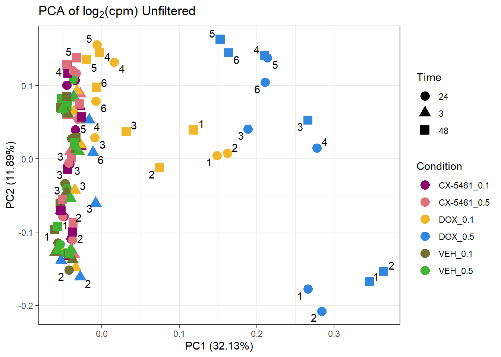
prcomp_res <- prcomp(t(lcpm %>% as.matrix()), center = TRUE)
ggplot2::autoplot(prcomp_res, data = Metadata, colour = "Condition", shape = "Time", size =4, x=2, y=3) +
ggrepel::geom_text_repel(label=Indiv) +
scale_color_manual(values=drug_palc) +
ggtitle(expression("PCA of log"[2]*"(cpm) Unfiltered")) +
theme_bw()Warning: ggrepel: 33 unlabeled data points (too many overlaps). Consider
increasing max.overlaps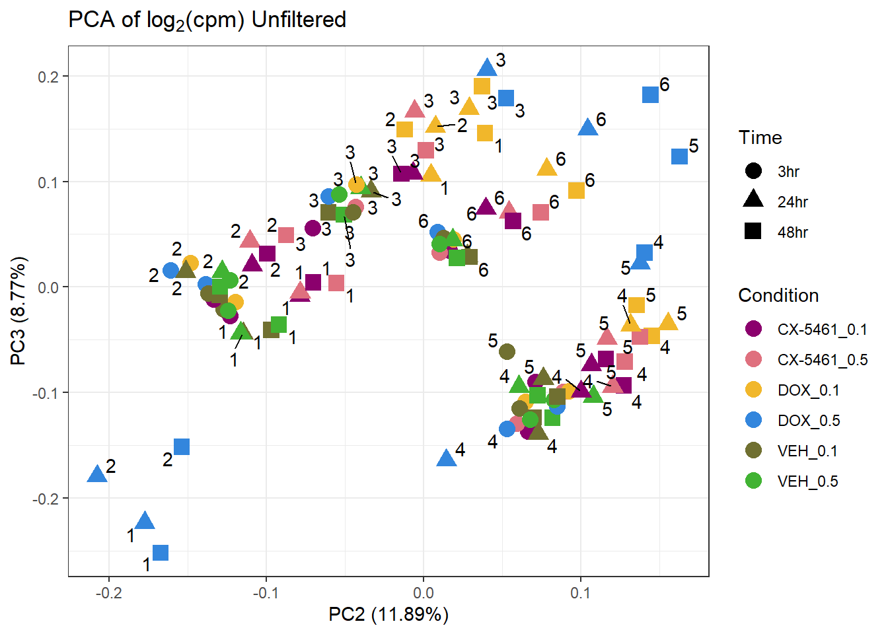
prcomp_res <- prcomp(t(lcpm %>% as.matrix()), center = TRUE)
ggplot2::autoplot(prcomp_res, data = Metadata, colour = "Condition", shape = "Time", size =4, x=3, y=4) +
ggrepel::geom_text_repel(label=Indiv) +
scale_color_manual(values=drug_palc) +
ggtitle(expression("PCA of log"[2]*"(cpm) Unfiltered")) +
theme_bw()Warning: ggrepel: 38 unlabeled data points (too many overlaps). Consider
increasing max.overlaps
📌PCA of Filtered log2(CPM) (RowMeans > 0)
prcomp_res1 <- prcomp(t(filcpm_matrix %>% as.matrix()), center = TRUE)
ggplot2::autoplot(prcomp_res1, data = Metadata, colour = "Drug_Conc", shape = "Time", size =4, x=1, y=2) +
ggrepel::geom_text_repel(label=Indiv) +
scale_color_manual(values=drug_conc_palette) +
ggtitle(expression("PCA of gene expression (log2 cpm)")) +
theme_bw()Warning: ggrepel: 51 unlabeled data points (too many overlaps). Consider
increasing max.overlaps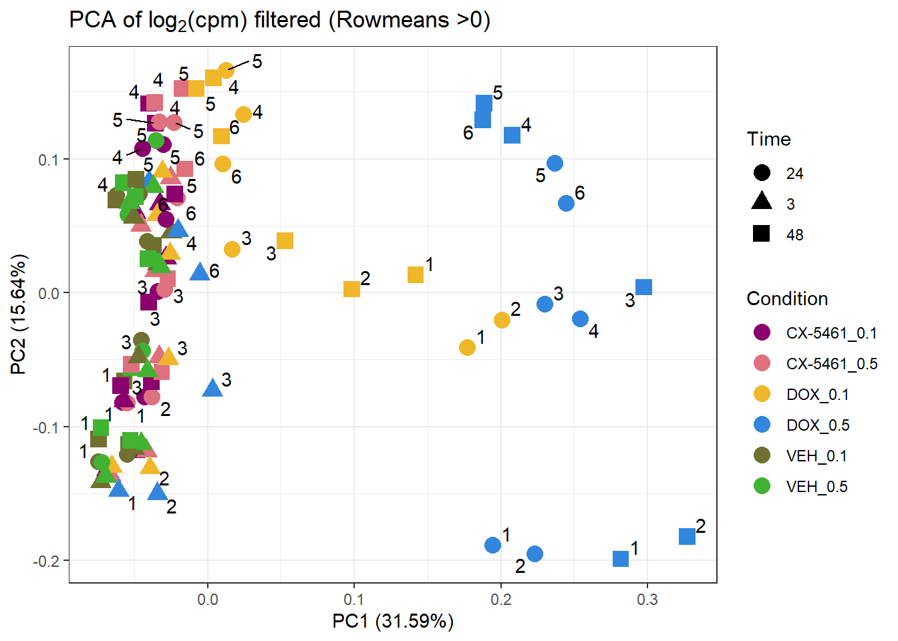
prcomp_res1 <- prcomp(t(filcpm_matrix %>% as.matrix()), center = TRUE)
ggplot2::autoplot(prcomp_res1, data = Metadata, colour = "Drug_Conc", shape = "Time", size =4, x=2, y=3) +
ggrepel::geom_text_repel(label=Indiv) +
scale_color_manual(values=drug_conc_palette) +
ggtitle(expression("PCA of log"[2]*"(cpm) filtered (Rowmeans >0)")) +
theme_bw()Warning: ggrepel: 22 unlabeled data points (too many overlaps). Consider
increasing max.overlaps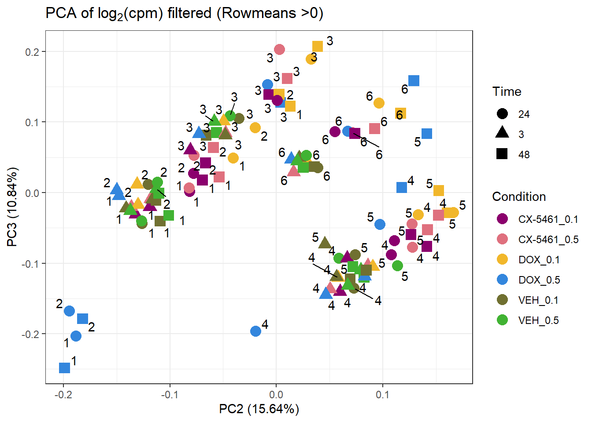
prcomp_res1 <- prcomp(t(filcpm_matrix %>% as.matrix()), center = TRUE)
ggplot2::autoplot(prcomp_res1, data = Metadata, colour = "Condition", shape = "Time", size =4, x=3, y=4) +
ggrepel::geom_text_repel(label=Indiv) +
scale_color_manual(values=drug_palc) +
ggtitle(expression("PCA of log"[2]*"(cpm) filtered (Rowmeans >0)")) +
theme_bw()Warning: ggrepel: 26 unlabeled data points (too many overlaps). Consider
increasing max.overlaps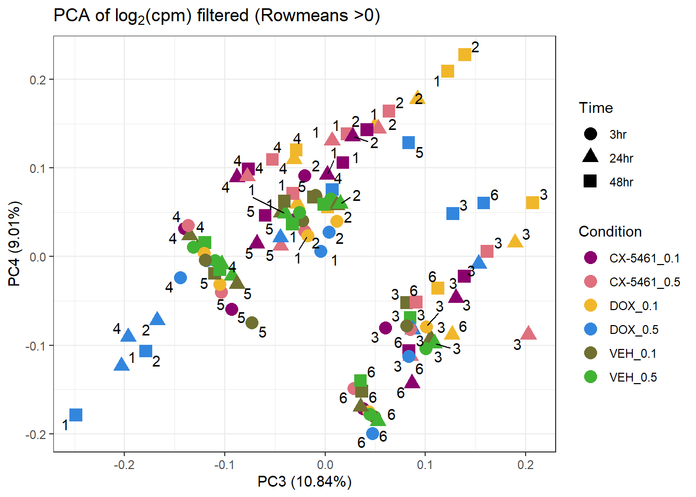
📌PCA of Filtered log2(CPM) (RowMeans > 0.5)
prcomp_res2 <- prcomp(t(filcpm_matrix1 %>% as.matrix()), center = TRUE)
ggplot2::autoplot(prcomp_res2, data = Metadata, colour = "Condition", shape = "Time", size =4, x=1, y=2) +
ggrepel::geom_text_repel(label=Indiv) +
scale_color_manual(values=drug_palc) +
ggtitle(expression("PCA of log"[2]*"(cpm) filtered (Rowmeans >0.5)")) +
theme_bw()Warning: ggrepel: 54 unlabeled data points (too many overlaps). Consider
increasing max.overlaps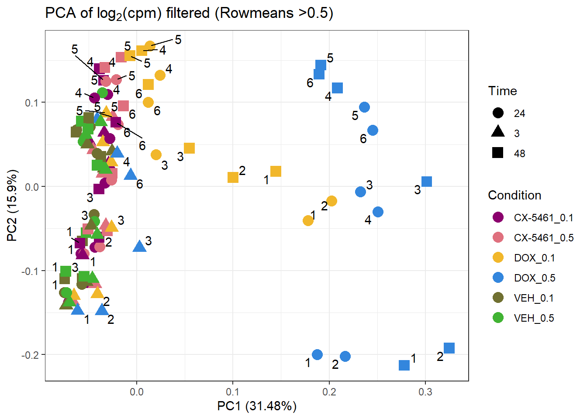
prcomp_res2 <- prcomp(t(filcpm_matrix1 %>% as.matrix()), center = TRUE)
ggplot2::autoplot(prcomp_res2, data = Metadata, colour = "Condition", shape = "Time", size =4, x=2, y=3) +
ggrepel::geom_text_repel(label=Indiv) +
scale_color_manual(values=drug_palc) +
ggtitle(expression("PCA of log"[2]*"(cpm) filtered (Rowmeans >0.5)")) +
theme_bw()Warning: ggrepel: 28 unlabeled data points (too many overlaps). Consider
increasing max.overlaps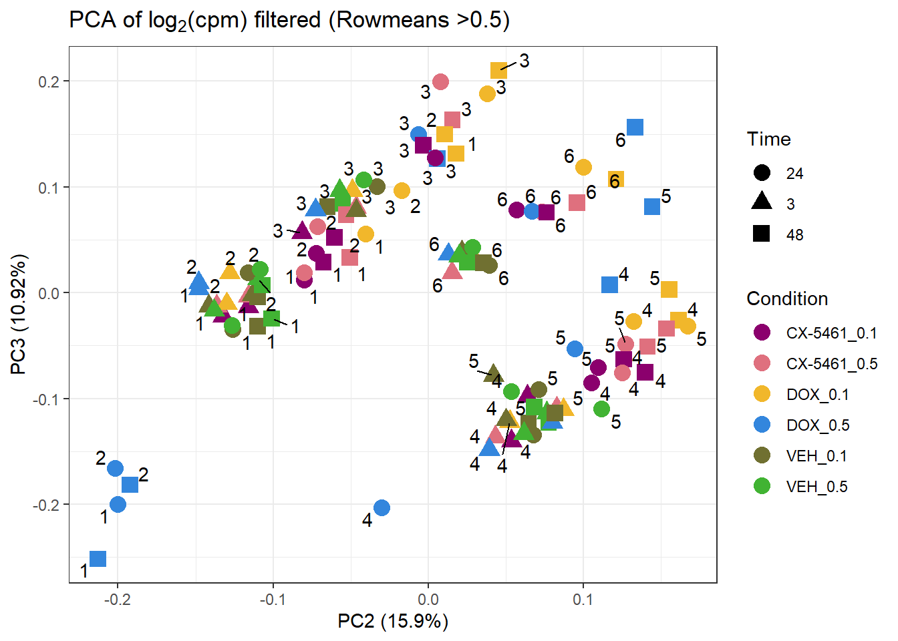
prcomp_res2 <- prcomp(t(filcpm_matrix1 %>% as.matrix()), center = TRUE)
ggplot2::autoplot(prcomp_res2, data = Metadata, colour = "Condition", shape = "Time", size =4, x=3, y=4) +
ggrepel::geom_text_repel(label=Indiv) +
scale_color_manual(values=drug_palc) +
ggtitle(expression("PCA of log"[2]*"(cpm) filtered (Rowmeans >0.5)")) +
theme_bw()Warning: ggrepel: 26 unlabeled data points (too many overlaps). Consider
increasing max.overlaps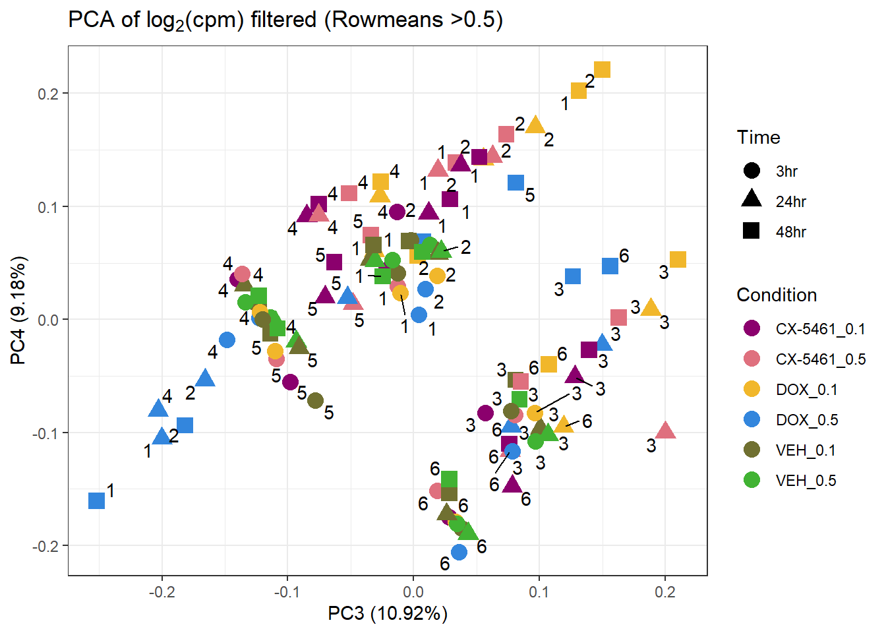
📌PCA of Filtered log2(CPM) (RowMeans > 1)
prcomp_res3 <- prcomp(t(filcpm_matrix2 %>% as.matrix()), center = TRUE)
ggplot2::autoplot(prcomp_res3, data = Metadata, colour = "Condition", shape = "Time", size =4, x=1, y=2) +
ggrepel::geom_text_repel(label=Indiv) +
scale_color_manual(values=drug_palc) +
ggtitle(expression("PCA of log"[2]*"(cpm) filtered (Rowmeans >1)")) +
theme_bw()Warning: ggrepel: 60 unlabeled data points (too many overlaps). Consider
increasing max.overlaps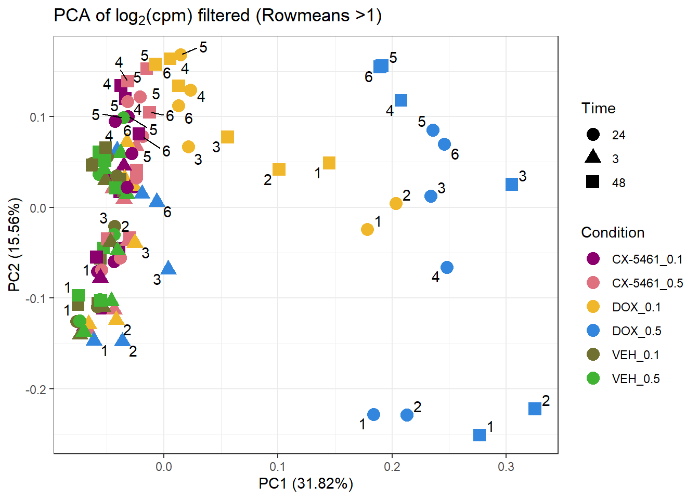
prcomp_res3 <- prcomp(t(filcpm_matrix2 %>% as.matrix()), center = TRUE)
ggplot2::autoplot(prcomp_res3, data = Metadata, colour = "Condition", shape = "Time", size =4, x=2, y=3) +
ggrepel::geom_text_repel(label=Indiv) +
scale_color_manual(values=drug_palc) +
ggtitle(expression("PCA of log"[2]*"(cpm) filtered (Rowmeans >1)")) +
theme_bw()Warning: ggrepel: 31 unlabeled data points (too many overlaps). Consider
increasing max.overlaps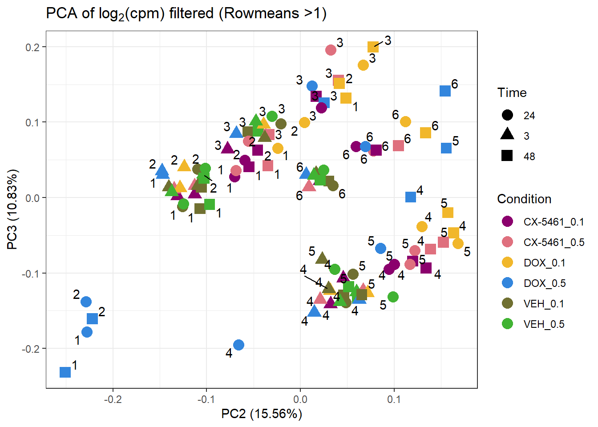
prcomp_res3 <- prcomp(t(filcpm_matrix2 %>% as.matrix()), center = TRUE)
ggplot2::autoplot(prcomp_res3, data = Metadata, colour = "Condition", shape = "Time", size =4, x=3, y=4) +
ggrepel::geom_text_repel(label=Indiv) +
scale_color_manual(values=drug_palc) +
ggtitle(expression("PCA of log"[2]*"(cpm) filtered (Rowmeans >1)")) +
theme_bw()Warning: ggrepel: 16 unlabeled data points (too many overlaps). Consider
increasing max.overlaps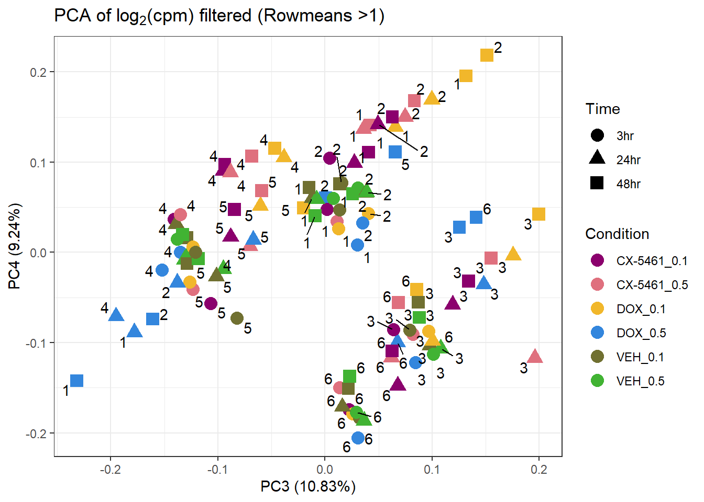
📌 PCA Analysis by Drugs
📌 PCA Analysis: CX-5461 & VEH
selected_columns <- grepl("VEH|CX.5461", colnames(matrix))
subset_matrix_CX <- matrix[, selected_columns]
subset_meta <- subset(Metadata, Metadata$Drug %in% c("VEH", "CX-5461"))
prcomp_res4 <- prcomp(t(subset_matrix_CX), center = TRUE)
ggplot2::autoplot(prcomp_res4, data = as.data.frame(subset_meta), colour = "Condition", shape = "Time", size = 4) +
ggrepel::geom_text_repel(label = subset_meta$Ind) + # ✅ Corrected label
scale_color_manual(values = drug_palc1) +
ggtitle(expression("PCA of log"[2]*"(cpm) Unfiltered (CX-5461 vs VEH)")) +
theme_bw()Warning: ggrepel: 4 unlabeled data points (too many overlaps). Consider
increasing max.overlaps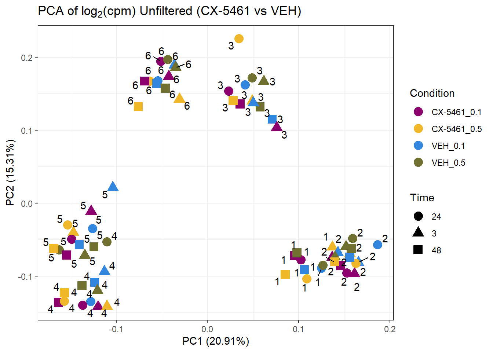
prcomp_res5 <- prcomp(t(subset_matrix_CX[rowMeans(subset_matrix_CX) > 0, ]), center = TRUE)
ggplot2::autoplot(prcomp_res5, data = as.data.frame(subset_meta), colour = "Condition", shape = "Time", size = 4) +
ggrepel::geom_text_repel(label = subset_meta$Ind) +
scale_color_manual(values = drug_palc1) +
ggtitle(expression("PCA of log"[2]*"(cpm) Filtered rowMeans > 0 (CX-5461 vs VEH)")) +
theme_bw()Warning: ggrepel: 2 unlabeled data points (too many overlaps). Consider
increasing max.overlaps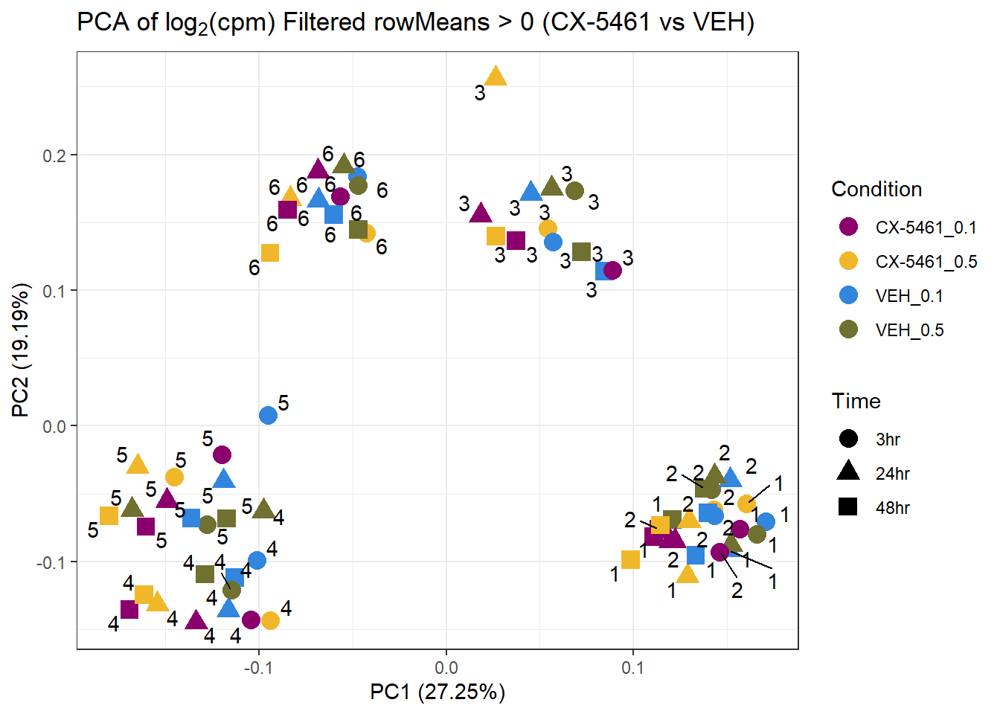
prcomp_res6 <- prcomp(t(subset_matrix_CX[rowMeans(subset_matrix_CX) > 0.5, ]), center = TRUE)
ggplot2::autoplot(prcomp_res6, data = as.data.frame(subset_meta), colour = "Condition", shape = "Time", size = 4) +
ggrepel::geom_text_repel(label = subset_meta$Ind) +
scale_color_manual(values = drug_palc1) +
ggtitle(expression("PCA of log"[2]*"(cpm) Filtered rowMeans > 0.5 (CX-5461 vs VEH)")) +
theme_bw()Warning: ggrepel: 2 unlabeled data points (too many overlaps). Consider
increasing max.overlaps
prcomp_res7 <- prcomp(t(subset_matrix_CX[rowMeans(subset_matrix_CX) > 1, ]), center = TRUE)
ggplot2::autoplot(prcomp_res7, data = as.data.frame(subset_meta), colour = "Condition", shape = "Time", size = 4) +
ggrepel::geom_text_repel(label = subset_meta$Ind) +
scale_color_manual(values = drug_palc1) +
ggtitle(expression("PCA of log"[2]*"(cpm) Filtered rowMeans > 1 (CX-5461 vs VEH)")) +
theme_bw()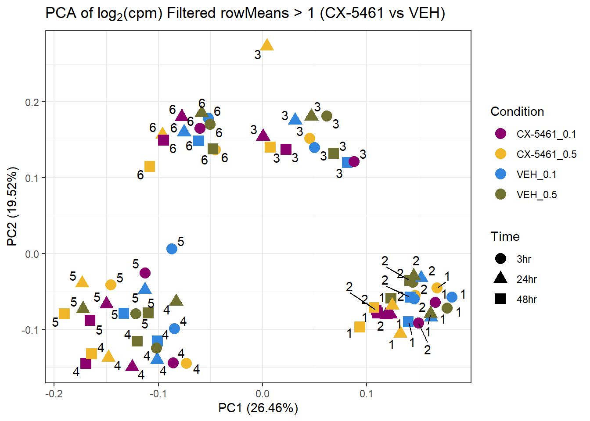
📌 PCA Analysis: DOX & VEH
selected_columns <- grepl("VEH|DOX", colnames(matrix))
subset_matrix_DOX <- matrix[, selected_columns]
subset_meta_dox <- subset(Metadata, Metadata$Drug %in% c("VEH", "DOX"))
prcomp_res8 <- prcomp(t(subset_matrix_DOX), center = TRUE)
ggplot2::autoplot(prcomp_res8, data = as.data.frame(subset_meta_dox), colour = "Condition", shape = "Time", size = 4) +
ggrepel::geom_text_repel(label = subset_meta_dox$Ind) +
scale_color_manual(values = drug_palc1) +
ggtitle(expression("PCA of log"[2]*"(cpm) Unfiltered (DOX vs VEH)")) +
theme_bw()Warning: ggrepel: 42 unlabeled data points (too many overlaps). Consider
increasing max.overlaps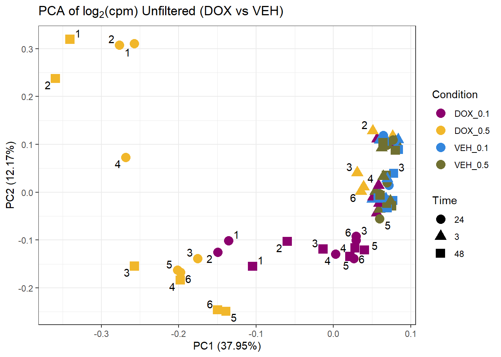
prcomp_res9 <- prcomp(t(subset_matrix_DOX[rowMeans(subset_matrix_DOX) > 0, ]), center = TRUE)
ggplot2::autoplot(prcomp_res9, data = as.data.frame(subset_meta_dox), colour = "Condition", shape = "Time", size = 4) +
ggrepel::geom_text_repel(label = subset_meta_dox$Ind) +
scale_color_manual(values = drug_palc1) +
ggtitle(expression("PCA of log"[2]*"(cpm) Filtered rowMeans > 0 (DOX vs VEH)")) +
theme_bw()Warning: ggrepel: 32 unlabeled data points (too many overlaps). Consider
increasing max.overlaps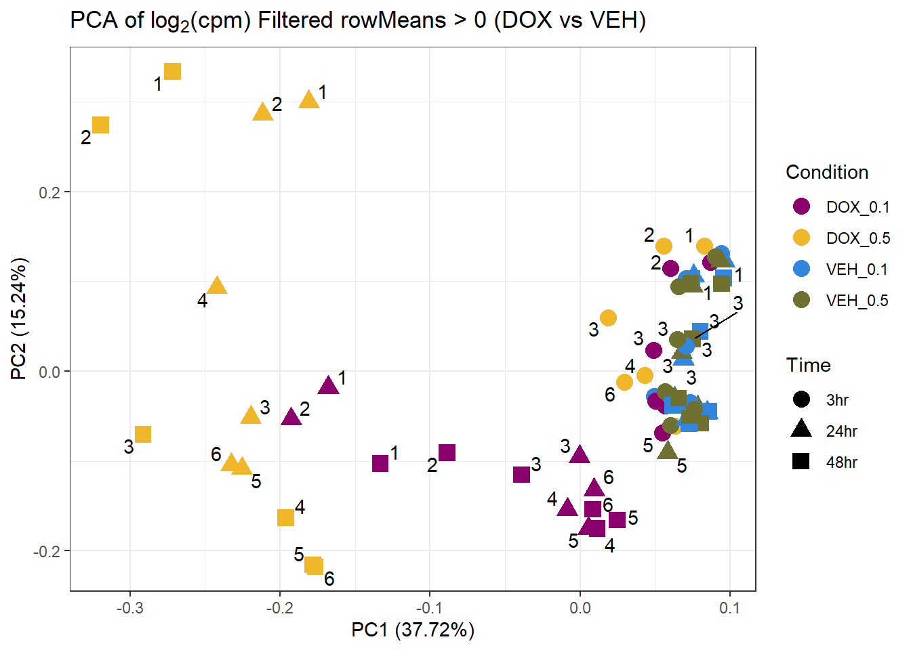
prcomp_res10 <- prcomp(t(subset_matrix_DOX[rowMeans(subset_matrix_DOX) > 0.5, ]), center = TRUE)
ggplot2::autoplot(prcomp_res10, data = as.data.frame(subset_meta_dox), colour = "Condition", shape = "Time", size = 4) +
ggrepel::geom_text_repel(label = subset_meta_dox$Ind) +
scale_color_manual(values = drug_palc1) +
ggtitle(expression("PCA of log"[2]*"(cpm) Filtered rowMeans > 0.5 (DOX vs VEH)")) +
theme_bw()Warning: ggrepel: 30 unlabeled data points (too many overlaps). Consider
increasing max.overlaps
prcomp_res11 <- prcomp(t(subset_matrix_DOX[rowMeans(subset_matrix_DOX) > 1, ]), center = TRUE)
ggplot2::autoplot(prcomp_res11, data = as.data.frame(subset_meta_dox), colour = "Condition", shape = "Time", size = 4) +
ggrepel::geom_text_repel(label = subset_meta_dox$Ind) +
scale_color_manual(values = drug_palc1) +
ggtitle(expression("PCA of log"[2]*"(cpm) Filtered rowMeans > 1 (DOX vs VEH)")) +
theme_bw()Warning: ggrepel: 34 unlabeled data points (too many overlaps). Consider
increasing max.overlaps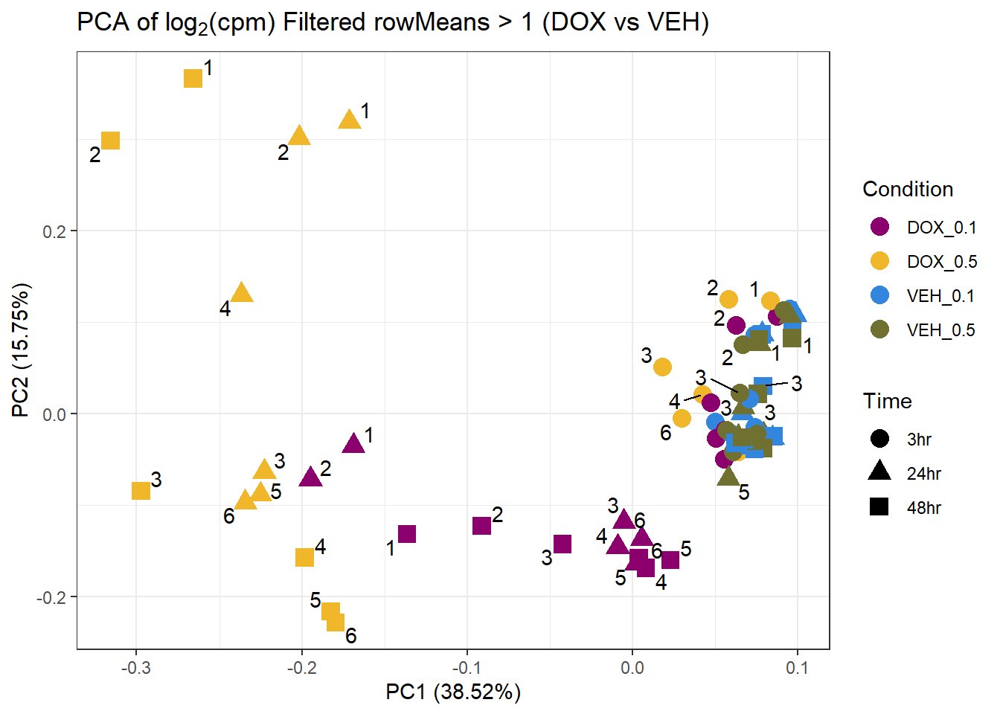
📌 PCA Analysis: CX-5461 & DOX
selected_columns <- grepl("CX.5461|DOX", colnames(matrix))
subset_matrix_CX_DOX <- matrix[, selected_columns]
subset_meta_cx_dox <- subset(Metadata, Metadata$Drug %in% c("CX-5461", "DOX"))
prcomp_res12 <- prcomp(t(subset_matrix_CX_DOX), center = TRUE)
ggplot2::autoplot(prcomp_res12, data = as.data.frame(subset_meta_cx_dox), colour = "Condition", shape = "Time", size = 4) +
ggrepel::geom_text_repel(label = subset_meta_cx_dox$Ind) +
scale_color_manual(values = drug_palc1) +
ggtitle(expression("PCA of log"[2]*"(cpm) Unfiltered (CX-5461 vs DOX)")) +
theme_bw()Warning: ggrepel: 30 unlabeled data points (too many overlaps). Consider
increasing max.overlaps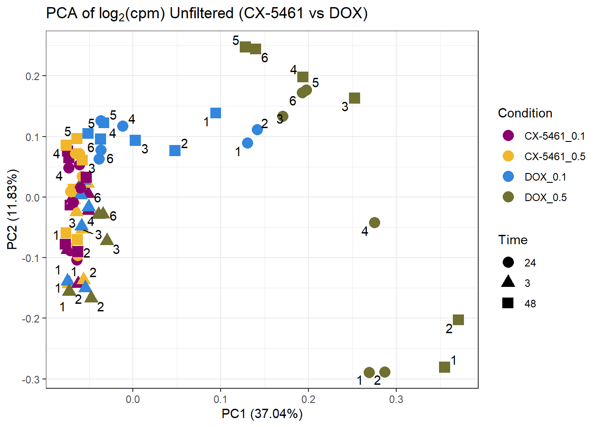
prcomp_res13 <- prcomp(t(subset_matrix_CX_DOX[rowMeans(subset_matrix_CX_DOX) > 0, ]), center = TRUE)
ggplot2::autoplot(prcomp_res13, data = as.data.frame(subset_meta_cx_dox), colour = "Condition", shape = "Time", size = 4) +
ggrepel::geom_text_repel(label = subset_meta_cx_dox$Ind) +
scale_color_manual(values = drug_palc1) +
ggtitle(expression("PCA of log"[2]*"(cpm) Filtered rowMeans > 0 (CX-5461 vs DOX)")) +
theme_bw()Warning: ggrepel: 16 unlabeled data points (too many overlaps). Consider
increasing max.overlaps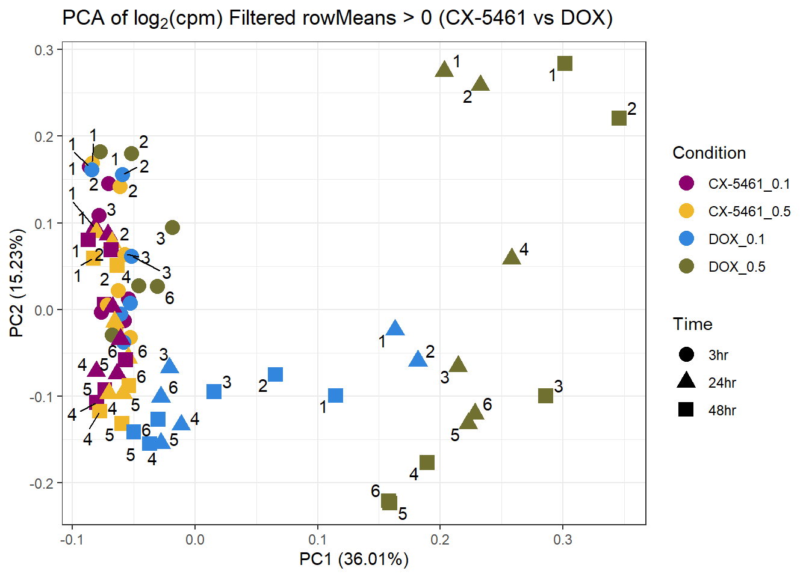
prcomp_res14 <- prcomp(t(subset_matrix_CX_DOX[rowMeans(subset_matrix_CX_DOX) > 0.5, ]), center = TRUE)
ggplot2::autoplot(prcomp_res14, data = as.data.frame(subset_meta_cx_dox), colour = "Condition", shape = "Time", size = 4) +
ggrepel::geom_text_repel(label = subset_meta_cx_dox$Ind) +
scale_color_manual(values = drug_palc1) +
ggtitle(expression("PCA of log"[2]*"(cpm) Filtered rowMeans > 0.5 (CX-5461 vs DOX)")) +
theme_bw()Warning: ggrepel: 15 unlabeled data points (too many overlaps). Consider
increasing max.overlaps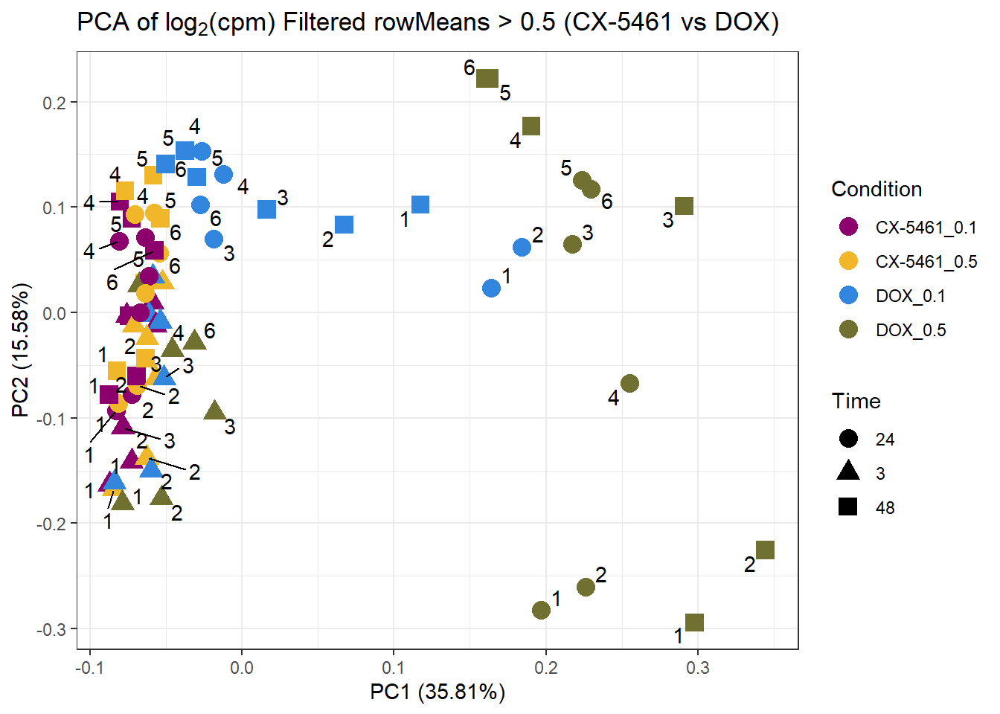
prcomp_res15 <- prcomp(t(subset_matrix_CX_DOX[rowMeans(subset_matrix_CX_DOX) > 1, ]), center = TRUE)
ggplot2::autoplot(prcomp_res15, data = as.data.frame(subset_meta_cx_dox), colour = "Condition", shape = "Time", size = 4) +
ggrepel::geom_text_repel(label = subset_meta_cx_dox$Ind) +
scale_color_manual(values = drug_palc1) +
ggtitle(expression("PCA of log"[2]*"(cpm) Filtered rowMeans > 1 (CX-5461 vs DOX)")) +
theme_bw()Warning: ggrepel: 21 unlabeled data points (too many overlaps). Consider
increasing max.overlaps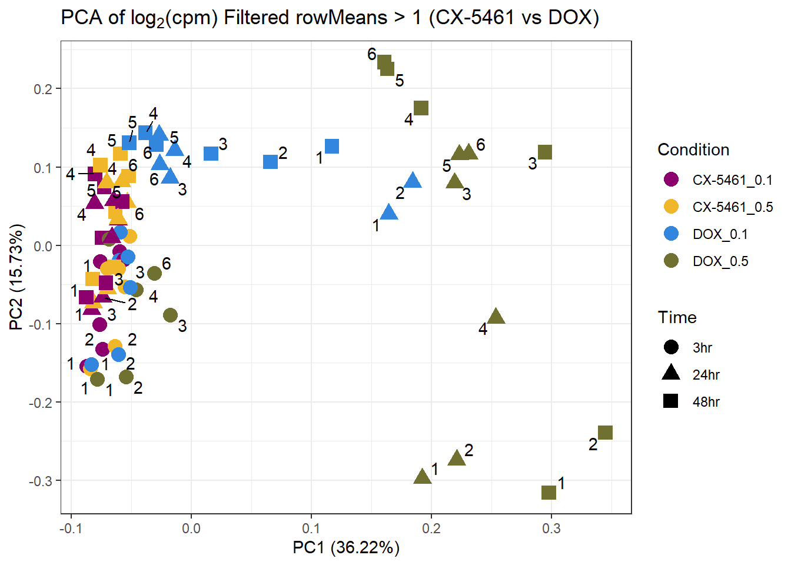
📌 PCA Analysis by Timepoints
📌 3-Hour Timepoint
selected_columns <- grepl("_3", colnames(matrix))
subset_matrix_3hr <- matrix[, selected_columns]
subset_meta_3hr <- subset(Metadata, Metadata$Time == "3hr")
filtered_matrix_3hr <- subset_matrix_3hr[rowMeans(subset_matrix_3hr) > 0, ]
if (nrow(filtered_matrix_3hr) > 2) {
prcomp_res_3hr <- prcomp(t(filtered_matrix_3hr), center = TRUE)
ggplot2::autoplot(prcomp_res_3hr, data = as.data.frame(subset_meta_3hr),
colour = "Drug_Conc", shape = "Drug", size = 4) +
ggrepel::geom_text_repel(aes(label = Ind)) +
scale_color_manual(values = drug_conc_palette) +
ggtitle(expression("PCA of log"[2]*"(cpm) Filtered rowMeans > 0 (3 Hours)")) +
theme_bw()
} else {
print("No genes passed the rowMeans > 0 filter for 3hr samples.")
}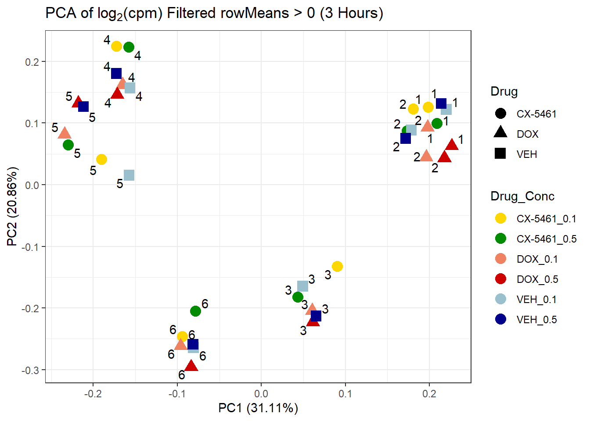
prcomp_res_3hr <- prcomp(t(subset_matrix_3hr[rowMeans(subset_matrix_3hr) > 0, ]), center = TRUE)
ggplot2::autoplot(prcomp_res_3hr, data = as.data.frame(subset_meta_3hr), colour = "Condition", shape = "Drug", size = 4, x=2, y=3) +
ggrepel::geom_text_repel(label = subset_meta_3hr$Ind) +
scale_color_manual(values = drug_palc) +
ggtitle(expression("PCA of log"[2]*"(cpm) Filtered rowMeans > 0 (3 Hours)")) +
theme_bw()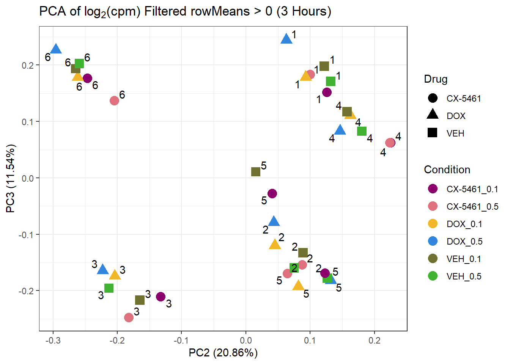
prcomp_res_3hr <- prcomp(t(subset_matrix_3hr[rowMeans(subset_matrix_3hr) > 0, ]), center = TRUE)
ggplot2::autoplot(prcomp_res_3hr, data = as.data.frame(subset_meta_3hr), colour = "Condition", shape = "Drug", size = 4, x=3, y=4) +
ggrepel::geom_text_repel(label = subset_meta_3hr$Ind) +
scale_color_manual(values = drug_palc) +
ggtitle(expression("PCA of log"[2]*"(cpm) Filtered rowMeans > 0 (3 Hours)")) +
theme_bw()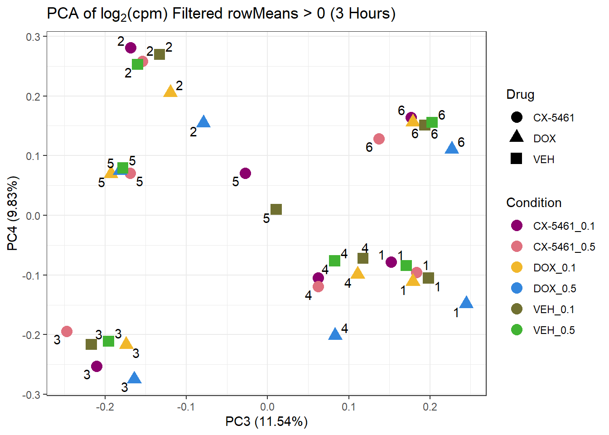
📌 24-Hour Timepoint
# 📌 Subset for 24hr samples
selected_columns <- grepl("_24", colnames(matrix))
subset_matrix_24hr <- matrix[, selected_columns]
subset_meta_24hr <- subset(Metadata, Metadata$Time == "24hr") # match your relabeled timepoints
# 📌 Filter low-expression genes
filtered_matrix_24hr <- subset_matrix_24hr[rowMeans(subset_matrix_24hr) > 0, ]
# 📌 Run PCA if genes remain
if (nrow(filtered_matrix_24hr) > 2) {
prcomp_res_24hr <- prcomp(t(filtered_matrix_24hr), center = TRUE)
ggplot2::autoplot(prcomp_res_24hr, data = as.data.frame(subset_meta_24hr),
colour = "Drug_Conc", shape = "Drug", size = 4) +
ggrepel::geom_text_repel(aes(label = Ind)) +
scale_color_manual(values = drug_conc_palette) +
ggtitle(expression("PCA of log"[2]*"(cpm) Filtered rowMeans > 0 (24 Hours)")) +
theme_bw()
} else {
message("⚠️ No genes passed the rowMeans > 0 filter for 24-hour samples.")
}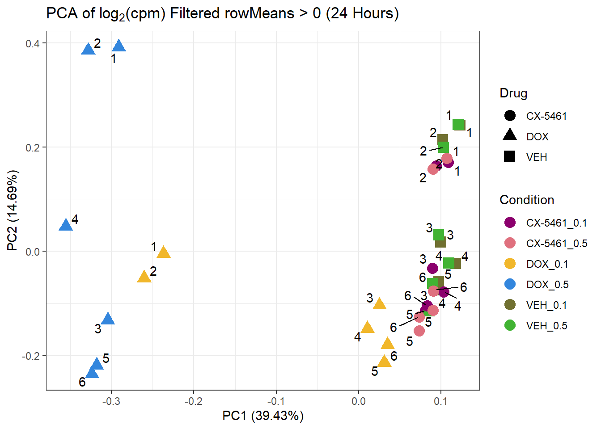
prcomp_res_24hr <- prcomp(t(subset_matrix_24hr[rowMeans(subset_matrix_24hr) > 0, ]), center = TRUE)
ggplot2::autoplot(prcomp_res_24hr, data = as.data.frame(subset_meta_24hr), colour = "Condition", shape = "Drug", size = 4, x=2, y=3) +
ggrepel::geom_text_repel(label = subset_meta_24hr$Ind) +
scale_color_manual(values = drug_palc) +
ggtitle(expression("PCA of log"[2]*"(cpm) Filtered rowMeans > 0 (24 Hours)")) +
theme_bw()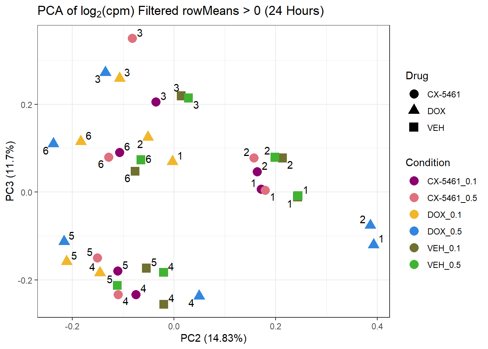
prcomp_res_24hr <- prcomp(t(subset_matrix_24hr[rowMeans(subset_matrix_24hr) > 0, ]), center = TRUE)
ggplot2::autoplot(prcomp_res_24hr, data = as.data.frame(subset_meta_24hr), colour = "Condition", shape = "Drug", size = 4, x=3, y=4) +
ggrepel::geom_text_repel(label = subset_meta_24hr$Ind) +
scale_color_manual(values = drug_palc) +
ggtitle(expression("PCA of log"[2]*"(cpm) Filtered rowMeans > 0 (24 Hours)")) +
theme_bw()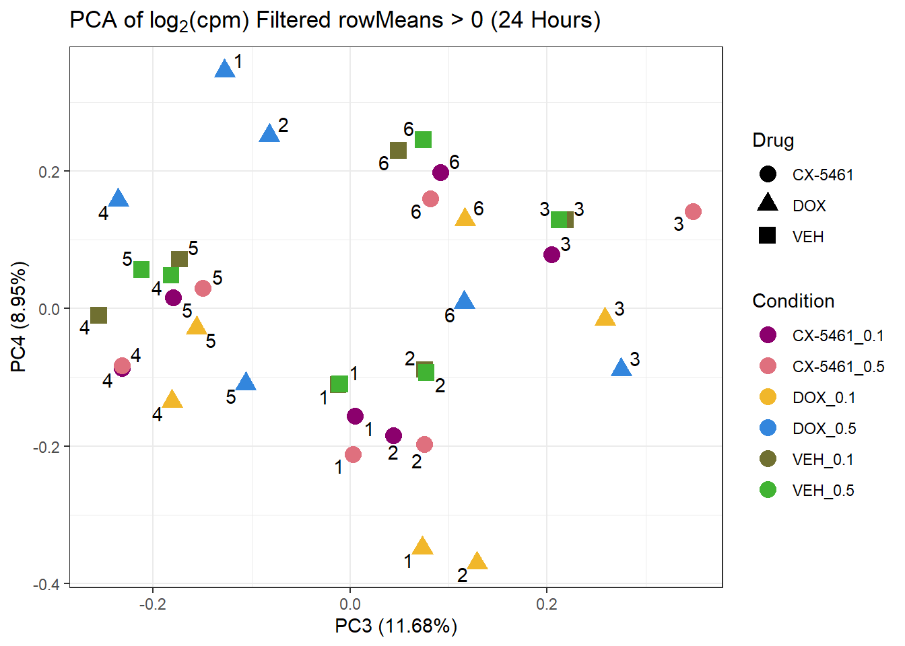
📌 48-Hour Timepoint
# 📌 Subset for 48hr samples
selected_columns <- grepl("_48", colnames(matrix))
subset_matrix_48hr <- matrix[, selected_columns]
subset_meta_48hr <- subset(Metadata, Metadata$Time == "48hr") # must match relabeled levels
# 📌 Filter low-expression genes
filtered_matrix_48hr <- subset_matrix_48hr[rowMeans(subset_matrix_48hr) > 0, ]
# 📌 Run PCA only if data is valid
if (nrow(filtered_matrix_48hr) > 2) {
prcomp_res_48hr_1 <- prcomp(t(filtered_matrix_48hr), center = TRUE)
ggplot2::autoplot(prcomp_res_48hr_1, data = as.data.frame(subset_meta_48hr),
colour = "Drug_Conc", shape = "Drug", size = 4) +
ggrepel::geom_text_repel(aes(label = Ind)) +
scale_color_manual(values = drug_conc_palette) +
ggtitle(expression("PCA of log"[2]*"(cpm) Filtered rowMeans > 0 (48 Hours)")) +
theme_bw()
} else {
message("⚠️ No genes passed the rowMeans > 0 filter for 48-hour samples.")
}Warning: ggrepel: 1 unlabeled data points (too many overlaps). Consider
increasing max.overlaps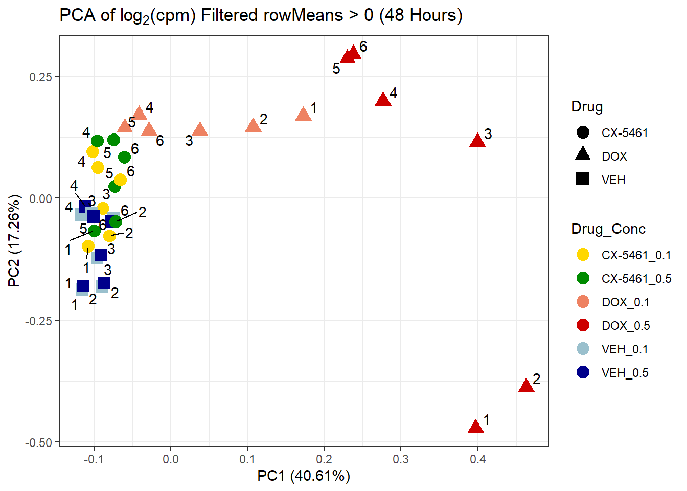
prcomp_res_48hr_1 <- prcomp(t(subset_matrix_48hr[rowMeans(subset_matrix_48hr) > 0, ]), center = TRUE)
ggplot2::autoplot(prcomp_res_48hr_1, data = as.data.frame(subset_meta_48hr), colour = "Condition", shape = "Drug", size = 4, x=2, y=3) +
ggrepel::geom_text_repel(label = subset_meta_48hr$Ind) +
scale_color_manual(values = drug_palc) +
ggtitle(expression("PCA of log"[2]*"(cpm) Filtered rowMeans > 0 (48 Hours)")) +
theme_bw()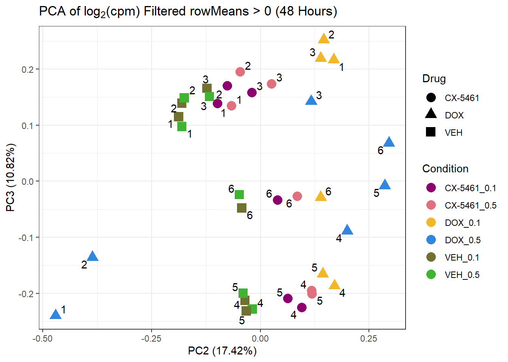
prcomp_res_48hr_1 <- prcomp(t(subset_matrix_48hr[rowMeans(subset_matrix_48hr) > 0, ]), center = TRUE)
ggplot2::autoplot(prcomp_res_48hr_1, data = as.data.frame(subset_meta_48hr), colour = "Condition", shape = "Drug", size = 4, x=3, y=4) +
ggrepel::geom_text_repel(label = subset_meta_48hr$Ind) +
scale_color_manual(values = drug_palc) +
ggtitle(expression("PCA of log"[2]*"(cpm) Filtered rowMeans > 0 (48 Hours)")) +
theme_bw()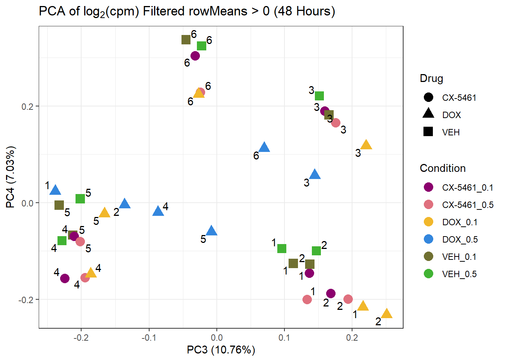
📌 PCA Analysis by Concentrations
📌0.1 µM Concentration
selected_columns <- grepl("_0.1_", colnames(matrix))
subset_matrix_0.1 <- matrix[, selected_columns]
subset_meta_0.1 <- subset(Metadata, Metadata$Conc. == 0.1)
prcomp_res_0.1 <- prcomp(t(subset_matrix_0.1[rowMeans(subset_matrix_0.1) > 0, ]), center = TRUE)
ggplot2::autoplot(prcomp_res_0.1, data = as.data.frame(subset_meta_0.1), colour = "Drug", shape = "Time", size = 4) +
ggrepel::geom_text_repel(label = subset_meta_0.1$Ind) +
scale_color_manual(values = drug_palc) +
ggtitle(expression("PCA of log"[2]*"(cpm) Filtered rowMeans > 0 (0.1 µM)")) +
theme_bw()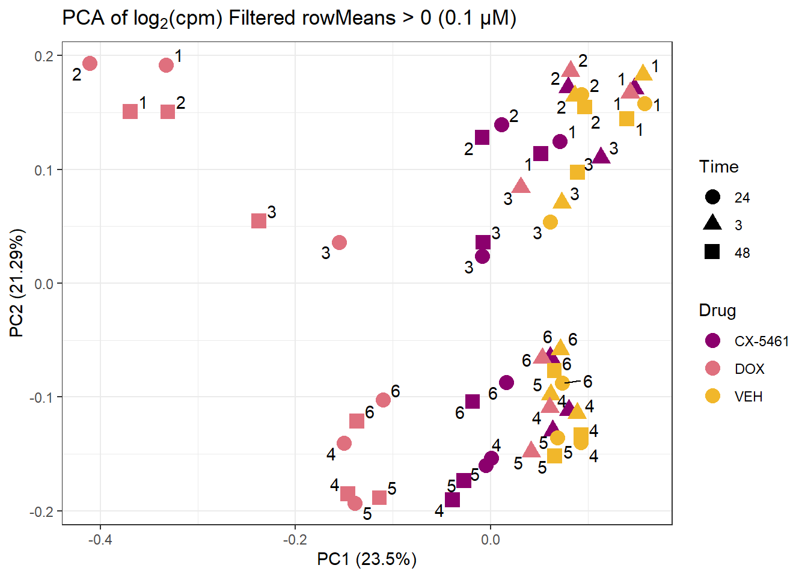
prcomp_res_0.1 <- prcomp(t(subset_matrix_0.1[rowMeans(subset_matrix_0.1) > 0, ]), center = TRUE)
ggplot2::autoplot(prcomp_res_0.1, data = as.data.frame(subset_meta_0.1), colour = "Drug", shape = "Time", size = 4, x=2, y=3) +
ggrepel::geom_text_repel(label = subset_meta_0.1$Ind) +
scale_color_manual(values = drug_palc) +
ggtitle(expression("PCA of log"[2]*"(cpm) Filtered rowMeans > 0 (0.1 µM)")) +
theme_bw()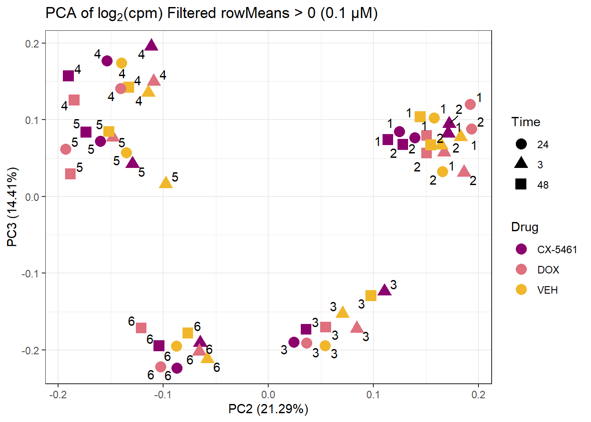
prcomp_res_0.1 <- prcomp(t(subset_matrix_0.1[rowMeans(subset_matrix_0.1) > 0, ]), center = TRUE)
ggplot2::autoplot(prcomp_res_0.1, data = as.data.frame(subset_meta_0.1), colour = "Drug", shape = "Time", size = 4, x=3, y=4) +
ggrepel::geom_text_repel(label = subset_meta_0.1$Ind) +
scale_color_manual(values = drug_palc) +
ggtitle(expression("PCA of log"[2]*"(cpm) Filtered rowMeans > 0 (0.1 µM)")) +
theme_bw()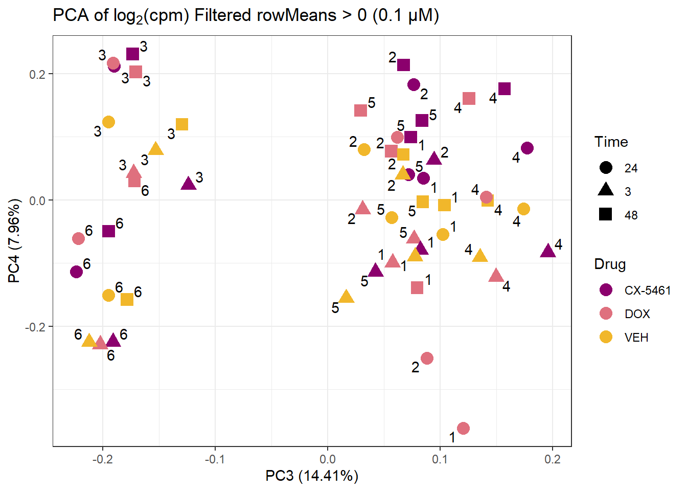
📌0.5 µM Concentration
selected_columns <- grepl("_0.5_", colnames(matrix))
subset_matrix_0.5 <- matrix[, selected_columns]
subset_meta_0.5 <- subset(Metadata, Metadata$Conc. == 0.5)
prcomp_res_0.5 <- prcomp(t(subset_matrix_0.5[rowMeans(subset_matrix_0.5) > 0, ]), center = TRUE)
ggplot2::autoplot(prcomp_res_0.5, data = as.data.frame(subset_meta_0.5), colour = "Drug", shape = "Time", size = 4) +
ggrepel::geom_text_repel(label = subset_meta_0.5$Ind) +
scale_color_manual(values = drug_palc) +
ggtitle(expression("PCA of log"[2]*"(cpm) Filtered rowMeans > 0 (0.5 µM)")) +
theme_bw()Warning: ggrepel: 11 unlabeled data points (too many overlaps). Consider
increasing max.overlaps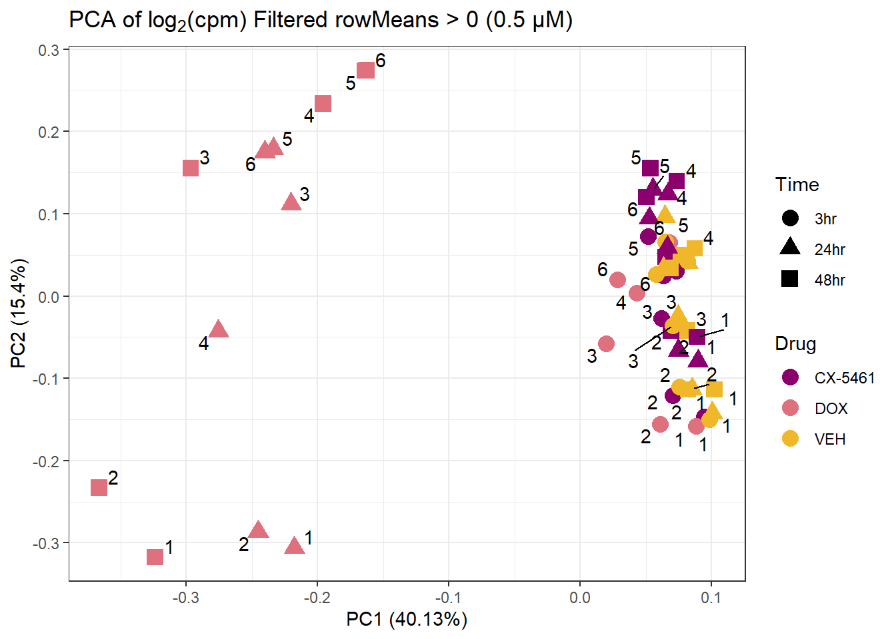
prcomp_res_0.5 <- prcomp(t(subset_matrix_0.5[rowMeans(subset_matrix_0.5) > 0, ]), center = TRUE)
ggplot2::autoplot(prcomp_res_0.5, data = as.data.frame(subset_meta_0.5), colour = "Drug", shape = "Time", size = 4, x=2, y=3) +
ggrepel::geom_text_repel(label = subset_meta_0.5$Ind) +
scale_color_manual(values = drug_palc) +
ggtitle(expression("PCA of log"[2]*"(cpm) Filtered rowMeans > 0 (0.5 µM)")) +
theme_bw()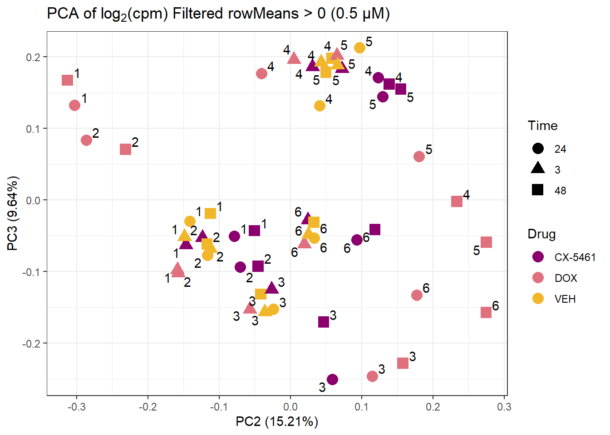
prcomp_res_0.5 <- prcomp(t(subset_matrix_0.5[rowMeans(subset_matrix_0.5) > 0, ]), center = TRUE)
ggplot2::autoplot(prcomp_res_0.5, data = as.data.frame(subset_meta_0.5), colour = "Drug", shape = "Time", size = 4, x=3, y=4) +
ggrepel::geom_text_repel(label = subset_meta_0.5$Ind) +
scale_color_manual(values = drug_palc) +
ggtitle(expression("PCA of log"[2]*"(cpm) Filtered rowMeans > 0 (0.5 µM)")) +
theme_bw()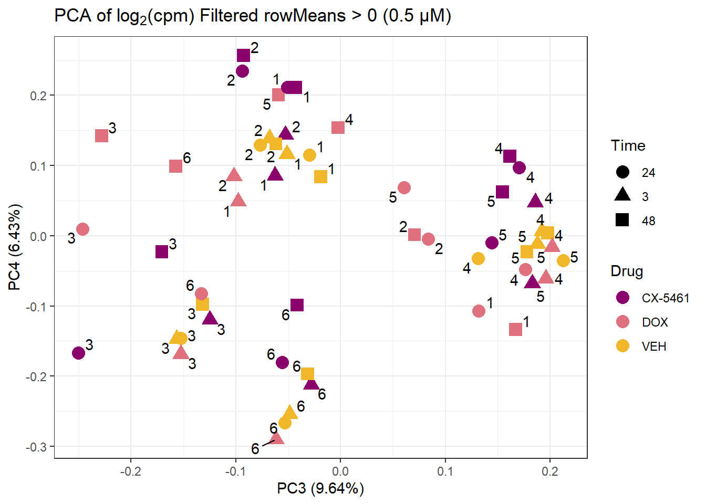
sessionInfo()R version 4.3.0 (2023-04-21 ucrt)
Platform: x86_64-w64-mingw32/x64 (64-bit)
Running under: Windows 11 x64 (build 26100)
Matrix products: default
locale:
[1] LC_COLLATE=English_United States.utf8
[2] LC_CTYPE=English_United States.utf8
[3] LC_MONETARY=English_United States.utf8
[4] LC_NUMERIC=C
[5] LC_TIME=English_United States.utf8
time zone: America/Chicago
tzcode source: internal
attached base packages:
[1] stats4 stats graphics grDevices utils datasets methods
[8] base
other attached packages:
[1] ggfortify_0.4.17 org.Hs.eg.db_3.18.0 AnnotationDbi_1.64.1
[4] IRanges_2.36.0 S4Vectors_0.40.2 Hmisc_5.2-3
[7] corrplot_0.95 ggrepel_0.9.6 biomaRt_2.58.2
[10] scales_1.3.0 lubridate_1.9.4 forcats_1.0.0
[13] stringr_1.5.1 purrr_1.0.4 readr_2.1.5
[16] tidyr_1.3.1 tibble_3.2.1 tidyverse_2.0.0
[19] Biobase_2.62.0 BiocGenerics_0.48.1 dplyr_1.1.4
[22] reshape2_1.4.4 ggplot2_3.5.2 edgeR_4.0.16
[25] limma_3.58.1 workflowr_1.7.1
loaded via a namespace (and not attached):
[1] DBI_1.2.3 bitops_1.0-9 gridExtra_2.3
[4] rlang_1.1.3 magrittr_2.0.3 git2r_0.36.2
[7] compiler_4.3.0 RSQLite_2.3.9 getPass_0.2-4
[10] png_0.1-8 callr_3.7.6 vctrs_0.6.5
[13] pkgconfig_2.0.3 crayon_1.5.3 fastmap_1.2.0
[16] backports_1.5.0 dbplyr_2.5.0 XVector_0.42.0
[19] labeling_0.4.3 promises_1.3.2 rmarkdown_2.29
[22] tzdb_0.5.0 ps_1.8.1 bit_4.6.0
[25] xfun_0.52 zlibbioc_1.48.2 cachem_1.1.0
[28] GenomeInfoDb_1.38.8 jsonlite_2.0.0 progress_1.2.3
[31] blob_1.2.4 later_1.3.2 prettyunits_1.2.0
[34] cluster_2.1.8.1 R6_2.6.1 bslib_0.9.0
[37] stringi_1.8.3 rpart_4.1.24 jquerylib_0.1.4
[40] Rcpp_1.0.12 knitr_1.50 base64enc_0.1-3
[43] httpuv_1.6.15 nnet_7.3-20 timechange_0.3.0
[46] tidyselect_1.2.1 rstudioapi_0.17.1 yaml_2.3.10
[49] curl_6.2.2 processx_3.8.6 lattice_0.22-7
[52] plyr_1.8.9 withr_3.0.2 KEGGREST_1.42.0
[55] evaluate_1.0.3 foreign_0.8-90 BiocFileCache_2.10.2
[58] xml2_1.3.8 Biostrings_2.70.3 pillar_1.10.2
[61] filelock_1.0.3 whisker_0.4.1 checkmate_2.3.2
[64] generics_0.1.3 rprojroot_2.0.4 RCurl_1.98-1.17
[67] hms_1.1.3 munsell_0.5.1 glue_1.7.0
[70] tools_4.3.0 data.table_1.17.0 locfit_1.5-9.12
[73] fs_1.6.3 XML_3.99-0.18 grid_4.3.0
[76] colorspace_2.1-0 GenomeInfoDbData_1.2.11 htmlTable_2.4.3
[79] Formula_1.2-5 cli_3.6.1 rappdirs_0.3.3
[82] gtable_0.3.6 sass_0.4.10 digest_0.6.34
[85] farver_2.1.2 htmlwidgets_1.6.4 memoise_2.0.1
[88] htmltools_0.5.8.1 lifecycle_1.0.4 httr_1.4.7
[91] statmod_1.5.0 bit64_4.6.0-1